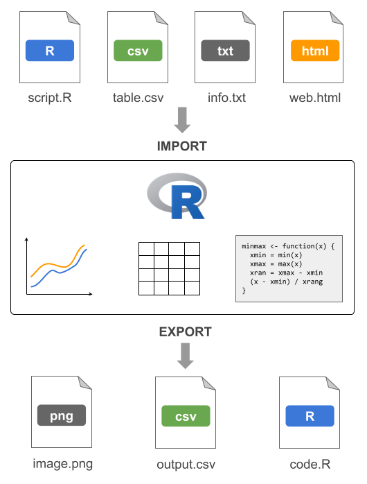
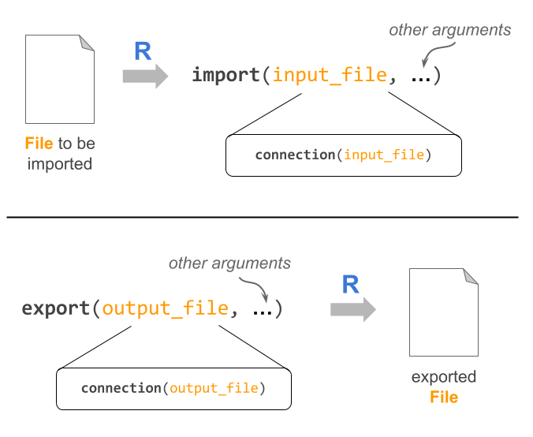

16 Introduction
This part of the book is dedicated to describe the various mechanisms available in R to import and export “data” and other “resources”. Here I’m using the term “resources” in an informal sense to refer to various types of files such as script files, binary files, text files, image files, and things like that. Likewise, I’m using the term “data” in a loosely way to indicate R data objects (e.g. vectors, arrays, lists, data-frames), graphics, code, as well as content of any kind of file.
You should know upfront that there’s a wide range of ways and options to import/export “data” in R. To go beyond the topics discussed in the book, and to know more about many of the technicalities behind importing and exporting resources in R, the authoritative document to look at is the manual R Data Import/Export available at:
https://cran.r-project.org/doc/manuals/r-release/R-data.html
16.1 Importing and Exporting Resources
R has a large number of functions and packages to import and to export a wide variety of resources and files (e.g. script files, binary files, text files, image files).
In the following figure, I’m depicting a conceptual diagram to show a couple of common examples for importing and exporting some resources.
Perhaps the most common type of importing operation is when we have some data table that we want to read in. For instance, we may have a data file called table.csv, located in our session’s working directory. Assuming that the format of this file is a comma-separated-value (CSV), we could try to import it in R with the help of the read.csv() function:
# hypothetical data-table importing example
dat = read.csv(file = "table.csv")Likewise, we could have one or more functions in an R script file called script.R that we want to import. Assuming that this file is also in our session’s working directory, we could use the function source() to source-in such functions:
# hypothetical R-script importing example
source(file = "script.R")What about exporting resources from R to some external resource? For example, consider a typical situation in which we have a data object, say a data frame, called tbl that we want to export into a text file. To be more precise, say we want to export the data frame tbl to a CSV file called output.csv to be located in our session’s directory. In this case, we may want to use the function write.csv()
# hypothetical data-table exporting example
write.csv(x = tbl, file = "output.csv")16.1.1 Behind import/export functions
Before I tell you more about some of the common—and not so common—import and export operations available in R, I first need to take you down a rabbit hole to explain some technicalities behind the related functions for importing and exporting resources in R.
When importing information from an external file, we need to use a certain data-import function, e.g. read.table(), readLines(), scan(), etc. As you might expect, each data-import function has specific arguments that let you choose further options for how R should handle this task. Despite their different arguments, all these functions have one thing in common which is the mandatory argument: the name of the input file.
The same thing can be said about the data-export functions such as write.table(), writeLines(), cat(), png(), etc. Even though each of these functions differs in its structure and arguments, they all have one thing in common: the mandatory argument consisting of the name of the output file.
The figure below illustrates both types of generic situations: importing from an input file, and exporting to an output file. In this diagram, I’m using the names import() and export() as generic labels for data-import and data-export functions.

As I said, the primary argument to the import and export functions is the “name” of the external file. Here the term “name” refers to the file path. In other words, the “name” is not just the name of the file but also its location on the file-system where the file is located.
The external file can be located in your computer or somewhere else, like in the “cloud”, which at the end of the day it’s going to be another computer remotely located.
Another thing to notice in the diagram has to do with the so-called connections. What I’m trying to indicate in the diagram is that all import and export functions use—under the hood—an internal connection() function which plays a fundamental role in this type of operations. What is a connection? Let’s find out.
16.2 Connections
In order for R to be able to import external resources (e.g. data files, script files, image files), it needs to have a way to communicate with the outside world. The same applies to any resource-exporting activity: R needs to open its doors to let resources enter and exit its territory.
The mechanism used by R to establish channels of communication with the outside world is given by the so-called connections. To explain this concept let me give you an analogy.
In this analogy I’m going to play the role of R. My family, friends, coworkers and students will play the generic role of resources. For example, if I want to communicate with my teaching assistants (TA), I need a mechanism to reach out to them. One way to communicate with my TAs could be talking to them in-person. Another way of communication could be via email (or old-fashion mail). Another possibility may involve me sending them a text-message, or maybe calling them by phone. In summary, there are several ways for me to connect with my TAs. This is precisely the main idea behind R connections.
Formally speaking, a connection is the mechanism used by R to establish a line of communication to external resources or files. Technically, connections are implemented by a set of functions, such as file(), url(), and gzfile()—to mention but a few—that allow us to create, open and close connections. You can find more information about these functions in their help documentation page:
help(connections)Let’s go back to my analogy. Say I want to reach out to one of my teaching assistants, and I decide to communicate with a text message sent from my cellphone. In this case we can say that the connection consists of sending a text message. If you think about this exporting operation I need to:
use a text-messaging application; this would be the equivalent of an
export()functionspecify the phone number to which my message will be sent; this would be the equivalent of the file path
write the content of the message; this would be the equivalent of the “data” to be exported
Now, the text-messaging application will take the phone number and “do its magic” to send my message. This “magical” part is the equivalent of the internal connection function.
It turns out that you rarely need to explicitly call any of the connection functions in R. If you were using other programming languages, chances are you may very well need to explicitly call a connection function (or its equivalent) to tell the program the kind of operation that you want to perform: for instance open a file in reading mode, or open a file in writing mode, or closing a file. Most of the time in R, though, we don’t need to specify this kind of low-level communication.
So why bother talking about connections?
I just want you to know that behind any function that allows you to import from a file, and export to a file, there is a connection function. Typically you don’t need to do anything with these internal functions. But if you want or need to take full control over all the details in an importing/exporting operation, connection functions are there for you.